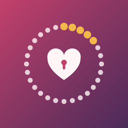

Support
Cyclekept · Your cycle belongs to you.
Contact
Email jvappsupport+cyclekept@proton.me. Please include your iPhone model and iOS version, but never your cycle data. We usually reply within a few days.
Moving to a new iPhone
Cyclekept is never in iCloud or iPhone backups, so restoring a new iPhone won't bring it back. On your old iPhone, open Privacy > Your data > Export encrypted backup, choose a password, and save or AirDrop the file. On the new iPhone, open Cyclekept, tap Import in the same place, and enter the password.
I forgot my backup password
We can't recover it. The backup is encrypted on your iPhone with your password, and we never receive the file or the password. If your old iPhone still has Cyclekept, export a new backup with a new password.
How accurate are the predictions?
Predictions are estimates based on the cycles you've logged, and they get better after a few cycles. They are not for contraception or conception, and they aren't medical advice. If anything about your cycle worries you, talk with a clinician.
Using Apple Health
Apple Health is optional and off by default. In Privacy > Apple Health, turn on Save to Apple Health to save the period flow and spotting days you log, or tap Import from Apple Health to bring in past periods. Only period flow and spotting are read or written.
My widget only says “Open Cyclekept”
That's on purpose while your iPhone is locked. To show your cycle day on an unlocked iPhone, long-press the widget, choose Edit Widget and turn on Show details.
The monthly summary isn't written by AI
The AI summary (Pro) uses Apple Intelligence on your iPhone. On iPhones without it, or when it's turned off, Cyclekept shows a plain summary instead. Everything else works the same.
Restoring Pro or sharing it with family
Pro is a one-time purchase with Family Sharing. On a new iPhone or for a family member, open Privacy > Pro and tap Restore Purchases.
Erasing everything
Privacy > Erase all Cyclekept data removes everything Cyclekept stored on your iPhone. This can't be undone, so export an encrypted backup first if you might want it later.
Privacy
Cyclekept collects no data. See the Privacy Policy.